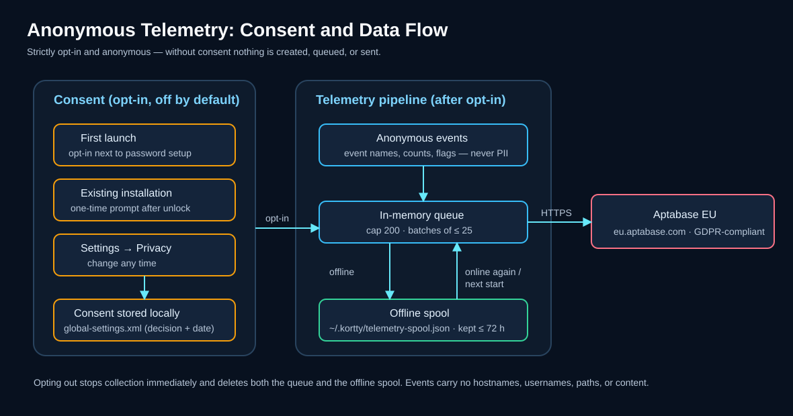

Anonyme Daten zur Applikationsoptimierung¶
korTTY kann anonyme Nutzungsstatistiken sammeln, um zu entscheiden, welche Funktionen es wert sind, verbessert zu werden, und um Abstürze und häufige Fehler zu finden. Dies ist völlig optional und kann jederzeit aktiviert oder deaktiviert werden. Beim ersten Start ist das Kontrollkästchen im Master-Passwort-Setup vorausgewählt. Wenn Sie also bestätigen, dass der Dialog unverändert ist, wird die Erfassung gestartet. Deaktivieren Sie das Kontrollkästchen dort oder schalten Sie es später aus, und es wird nichts erfasst.

Übersicht¶
- Ihre Entscheidung, einmalig. Es wird nichts gesammelt, bevor Sie bestätigen. Sie werden ein einziges Mal gefragt, zusammen mit der Master-Passwort-Einrichtung beim ersten Start, wo das Kontrollkästchen vorausgewählt ist; bei bestehenden Installationen wird ein Dialog nach dem Öffnen des Hauptfensters angezeigt, wobei jede Ablehnung als "nein" gezählt wird.
- Anonym. Es wird kein Konto, kein Login und keine dauerhafte Gerätekennung übertragen.
- Widerruflich. Sie können Ihre Entscheidung jederzeit unter Einstellungen → Datenschutz ändern. Wenn Sie die Funktion deaktivieren, wird die Erfassung sofort gestoppt und alle noch nicht gesendeten Daten werden verworfen.
Was gesammelt wird¶
| Daten | Beispiel |
|---|---|
| Ereignisnamen | App-Start, verwendete Funktion (z. B. ein Tool geöffnet, ein Backup erstellt) |
| Aggregierte Anzahl und Flags | Anzahl der geöffneten Terminal-Tabs, ob AI aktiviert ist |
| App-Version | die korTTY-Version, die unter Hilfe → Über angezeigt wird |
| Betriebssystem und Version | macOS 15, Windows 11, Linux |
| App-Sprache | de, en |
| Ob korTTY aus einem installierten Paket oder einer Entwicklungsbuild läuft | isDebug |
| Eine anonyme Sitzungs-ID | eine zufällige Zahl, die bei jedem Start und nach einer Stunde ohne Ereignisse neu generiert wird |
Die Sitzungs-ID ist keine dauerhafte Kennung: sie wird jedes Mal neu generiert und kann nicht auf Sie zurückverfolgt werden. Jeder Ereignis trägt nur diese gemeinsamen Felder, den Ereignisnamen, die Erstellungszeit und die unten aufgeführten Werte. Es gibt keine Installations-ID, keinen Hostnamen und keinen Benutzernamen in den Daten.
Jedes Ereignis, das korTTY senden kann¶
Die Tabellen unten listen jedes Ereignis auf, wann es gesendet wird und welche Werte dazu gehören. Die Werte sind feste Namen aus einer kurzen Liste, true/false-Flags oder Zählungen. Einige Zählungen werden auf einen Schritt abgerundet (die Tabellen geben an, welcher: 0, 1, 2, 3, 5, 10 oder 20 für Panes, Tabs und Fenster, so dass sieben Pane als 5 gemeldet werden; 0, 1, 2, 5, 10, 50, 100 oder 1000 für übertragenen Dateien; 0, 1, 2, 5, 10 oder 50 für Uploads einer bearbeiteten Datei); die anderen Zählungen sind genaue Zahlen.
Anwendung, Fehler und Einstellungen¶
| Ereignis | Gesendet, wenn | Daten |
|---|---|---|
app_started |
Sammlung wird aktiv: beim Start mit Ihrer erfassten Zustimmung, oder im Moment, wenn Sie im Setup-Dialog zustimmen, die einmalige Aufforderung oder Einstellungen | nichts außer den gemeinsamen Feldern |
app_crash_detected |
korTTY startet und stellt fest, dass der vorherige Lauf mit aktiver Sammlung nicht sauber beendet wurde | die Version, die abgestürzt ist |
app_error |
korTTY protokolliert einen Fehler außerhalb seines eigenen Telemetriecodes; jeder eindeutige Fehler wird pro Lauf einmal gemeldet, höchstens 20 pro Lauf | der Name der Ausnahmeklasse, die korTTY-Klasse und Methode, aus der er stammt (oder external) sowie der Logger-Name; niemals der Nachrichtentext |
usage_snapshot |
einmal beim Start und einmal beim Herunterfahren | genaue Zählungen und Flags: Fenster, Terminal-Tab, Schlüssel, Anmeldeinformationen und Snippets, ob KI aktiviert ist und wie viele Profile existieren, Teamwork-Quellen, sichtbare Coding-Agenten, Steuerungs-API und MCP-Aufrufe in diesem Lauf |
ai_profile_snapshot |
einmal pro konfiguriertem KI-Profil beim Start | Der Verbindungsmodus des Profils (http_api, local_cli, embedded_llama_cpp, embedded_mlx), die CLI-Anbieter-ID oder none, die Modellfamilie (openai, anthropic, google, minimax, meta, mistral, deepseek, qwen, phi, cohere, xai, auto oder other) und seine Position in der Liste |
window_opened |
ein Hauptfenster wird erstellt | die Anzahl geöffneter Fenster |
setting_changed |
Sie speichern Globale Einstellungen und eine Einstellung hat einen neuen Wert; höchstens 25 pro Speichern der Einstellungsname und Tab sowie, für Schalter, Zahlen und Auswahlmöglichkeiten, der neue Wert; für die Schriftfamilie und die Terminalfarben kein Wert; für Schnellwahlbuchstaben und Muster, umgebundene Tastenkürzel, das Startverzeichnis, die API-URL und Region sowie den externen Editorbefehl nur, ob einer gesetzt ist | die Einstellungsname und Tab sowie, für Schalter, Zahlen und Auswahlmöglichkeiten, der neue Wert; für die Schriftfamilie und die Terminalfarben kein Wert; für Schnellwahlbuchstaben und Muster, umgebundene Tastenkürzel, das Startverzeichnis, die API-URL und Region sowie den externen Editorbefehl nur, ob einer gesetzt ist |
master_password_changed |
Eine Änderung des Master-Passworts hat jeden Speicher neu verschlüsselt, nichts abgesehen von den gemeinsamen Feldern | |
update_check_clicked |
Sie klicken die manuelle Updateprüfung. | nichts außer den üblichen Feldern |
Terminal und Tabs¶
| Ereignis | Gesendet, wenn | Daten |
|---|---|---|
terminal_tab_opened |
Ein neuer Terminal-Tab beginnt zu verbinden | das Protokoll (ssh_tcp, mosh, mosh_client, local_shell) und die Anzahl der Tabs im Fenster |
terminal_split_created |
Ein Bereich wird geteilt | same_server_new_shell oder new_connection, und die Anzahl der Bereiche im Tab |
broadcast_toggled |
Broadcast-Modus eines geteilten Tabs wird | ein- oder ausgeschaltet, und die Anzahl der Paneele |
multi_exec_changed |
Sie Bereiche zu Multi-Exec hinzufügen, sie entfernen oder Multi-Exec beenden | ob Multi-Exec noch aktiv ist, und die gerundete Anzahl der beteiligten Bereiche, Tabs und Fenster |
terminal_highlight_applied |
Ein Paneel beginnt, ein anderes Highlighting-Regelsatz anzuzeigen | die ID eines integrierten Satzes (builtin.errors, builtin.network, builtin.network-devices), oder custom oder none, und wo die Wahl herkam (menu, shortcut, connection oder default) |
terminal_effect_applied |
Ein Terminaleffekt beginnt in einem Paneel | die ID des Effekt-Plugins |
terminal_log_started |
Terminal-Logging beginnt in einem Paneel | das Log-Format (plain_text, xml, json) |
session_isolation |
eine isolierte oder Inkognito-Terminal-Sitzung verbindet sich | die angeforderte Isolationsstufe (none, process, sandbox), der erreichte Zustand (none, process, sandboxed, degraded), die Betriebssystemfamilie und ob der Tab inkognito ist |
session_restored |
die vorherige Sitzung wieder geöffnet wird | die Einstellung Sitzungswiederherstellung (ask, auto oder off), ob das Menü, die Leiste beim Start oder die automatische Wiederherstellung sie geöffnet hat, und die gerundete Anzahl der Fenster und Tabs |
fullscreen_entered |
das Fenster wird im Vollbildmodus angezeigt | os für den Vollbildmodus des Betriebssystems, terminal_only für den terminal-nur Modus von korTTY |
command_palette_used |
eine Zeile der Befehlspalette ausgeführt wird | die Art der Zeile (action, tab, connection oder snippet) und ob die Suche mit einem Bereichspräfix wie > oder @ begonnen hat |
file_loaded_as_text |
eine Datei wird als Text aus einer Terminalauswahl oder dem Dateibrowser geöffnet | terminal_selection oder file_browser |
Fenster, Panels und Werkzeuge¶
| Ereignis | Gesendet, wenn | Daten |
|---|---|---|
dashboard_toggled |
das Dashboard wird angezeigt oder ausgeblendet | angezeigt oder ausgeblendet |
dashboard_action |
eine Zeilenaktion des Dashboards führt aus | reconnect, close, focus, sftp_manager oder duplicate |
file_browser_toggled |
der Dateibrowser wird angezeigt | left oder right |
file_browser_action |
ein Menü- oder Kontextmenü-Aktion des Dateibrowsers führt die Aktion aus: | die Aktion: open, load_as_text, copy, cut, paste, delete, copy_path, details, archive, new_folder, new_file, rename oder owner_permissions |
coding_agent_panel_toggled |
das Coding-Agents-Panel wird angezeigt, ausgeblendet oder verschoben | HIDDEN, LEFT oder RIGHT |
journal_live_panel_toggled |
das Live-Journal-Panel wird angezeigt, ausgeblendet oder verschoben | HIDDEN, LEFT oder RIGHT |
tool_opened |
wird ein Tool-Fenster geöffnet | welches: ai_swarm, teamwork_settings, terminal_effect_manager, ai_agent_design, ascii_art, session_processes, video_manager, snippet_manager (mit tab oder window), job_scheduler, ai_manager, saved_chats, session_journals oder manual |
connect_ui_opened |
Schnellverbindung oder der Connection-Manager öffnet | quick_connect oder connection_manager |
connection_transfer |
Verbindungen werden importiert oder exportiert | import oder export, der verwendete Importer oder Exporter (korTTY, PuTTY Connection Manager, MTPuTTY, MobaXterm) und die Anzahl der Verbindungen |
project_action |
ein Projekt wird geöffnet oder gespeichert | open oder save |
backup_action |
ein Backup wird erstellt oder importiert | create oder import |
teamwork_configured |
Teamwork-Einstellungen werden gespeichert: die Anzahl der Quellen, Git-Quellen und gemeinsam genutzten Dateien sowie das Prüfintervall in Minuten | die Anzahl der Quellen, Git-Quellen und gemeinsam genutzten Dateien sowie das Prüfintervall in Minuten |
Sicherheit¶
| Ereignis | Gesendet, wenn | Daten |
|---|---|---|
security_manager_opened |
ein Sicherheitsmanager-Dialog öffnet sich | credentials, gpg_keys, ssh_keys oder known_hosts |
security_entry_changed |
Sie fügen manuell einen Eintrag hinzu, bearbeiten oder entfernen in einem davon, oder importieren Sie eine known_hosts-Datei |
im Manager, die Operation (add, edit, remove, import) und die Art (manual, known_hosts_file, gpg_import); niemals der Eintrag selbst |
AI¶
| Ereignis | Gesendet, wenn | Daten |
|---|---|---|
ai_chat_message |
eine KI-Anfrage aus einer Terminalauswahl öffnet einen Chat, oder ein Follow-Up oder Schwarm-Broadcast wird gesendet | der Verbindungsmodus des Profils, CLI-Anbieter-ID und Modellfamilie (wie bei ai_profile_snapshot), ob es die erste Nachricht ist, ob es ein Broadcast ist, der Aktionsname und ob eine Datei angehängt wurde |
ai_agent_run_started |
ein Terminal KI-Agent läuft startet | die Profilwerte oben und ask oder execute |
ai_plan_run_started |
ein KI-Planungslauf startet | die Profilwerte oben |
ai_chat_saved |
ein KI-Chat oder Schwarmchat wird gespeichert, auch durch einen geplanten Schwarmjob | chat oder swarm, und ob es neu ist oder ein Update |
ai_saved_chat_opened |
ein gespeicherter Chat wird geöffnet | chat oder swarm |
ai_code_block_action |
Einfügen oder Ausführen wird auf einem Codeblock eines KI-Chats verwendet | insert oder run und ob die Aktion mit sent, cancelled (die Ausführen-Bestätigung wurde abgelehnt) oder refused (die Richtlinie, der Block oder der Bereich ließ es nicht zu) endete |
Der Block, seine Sprache, der Befehl, das Fenster, der Tab, der Host, der Grund für eine Ablehnung und jeglicher Prompt- oder Antworttext werden niemals gesendet.
Snippets¶
| Ereignis | Gesendet, wenn | Daten |
|---|---|---|
snippet_saved |
Ein Snippet wird aus dem Editor gespeichert, seine Sprache aus einer festen Liste (oder other), ob es eine Kategorie hat und die Anzahl seiner Zeilen |
|
snippet_ai_action |
wird eine KI-Steuerung des Snippet-Editors verwendet, eine Code-Review-Aktion ausgeführt oder Analysen exportiert | die ID der Aktion (z. B. code_review, code_complete_accepted, code_review_export), und bei Exporten das Format, die Verpackung (combined oder zip) und die Anzahl |
snippet_history_used |
die erste Rückgängig-Aktion oder die erste Verwendung des Verlaufsschiebers in einem Editor | undo oder history_slider |
snippet_oneliner_used |
ein One-liner wird erzeugt | compact oder base64 |
Session-Journale und die Anleitung¶
| Ereignis | Gesendet, wenn | Daten |
|---|---|---|
journal_ai_ask |
Eine Frage wird im Ask-Panel eines Journals gestellt | nichts außer den üblichen Feldern; die Frage wird nie gesendet |
journal_ai_cross_search |
eine KI-Suche über mehrere Journale wird gestartet | die Anzahl der Journale im Umfang, wie 1-10, 11-50, 51-200 oder 200+ |
guide_page_viewed |
die Anleitungfenster zeigt eine Seite | der Dateiname der Seite |
guide_ai_search |
eine Frage wird im Ask-Panel der Anleitungs gestellt | die Anleitungssprache; die Frage wird nie gesendet |
guide_citation_clicked |
eine Quellenangabe in einer Ask-Antwort wird angeklickt | der Dateiname der zitierten Seite |
SFTP-Übertragungen¶
Wenn ein SFTP-Manager-Tab geöffnet wird, gibt ein Ereignis an, ob es die Sitzung eines Terminals teilt. Wenn ein Upload oder Download im SFTP-Manager abgeschlossen ist, gibt ein Ereignis an, wie es verlaufen ist. Wenn korTTY das Beobachten einer von Ihnen in einem externen Editor (auch als Root) bearbeiteten Datei beendet, gibt ein Ereignis an, warum.
| Ereignis | Gesendet, wenn | Daten |
|---|---|---|
sftp_opened |
ein SFTP-Manager-Tab wird geöffnet | ob er die SSH-Sitzung eines Terminalbereichs oder eine eigene Anmeldung verwendet |
sftp_transfer_batch |
ein Upload- oder Download-Stapel (ein Klick auf eine Schaltfläche oder ein Ablegen) ist abgeschlossen | upload oder download, die gerundete Anzahl der Dateien, ob er mit done, partial, failed oder cancelled endete, ob eine Datei eine Teildatei fortgesetzt hat und wie viele Dateien gleichzeitig kopiert wurden |
sftp_remote_edit |
korTTY beendet die Beobachtung einer mit In externem Editor bearbeiten oder Als root bearbeiten (sudo)... geöffneten Datei | external oder sudo, ob sie mit stopped, conflict, disconnected, closed oder failed endete, und die abgerundete Zahl der Uploads |
Datei- und Ordnernamen, Pfade, Servernamen, Editorbefehle, sudo-Passwörter und Dateigrößen werden niemals gesendet.
Coding-Agents, Steuerungs-API und MCP-Clients¶
Wenn ein Programm die Steuerungs-API verwendet, meldet korTTY welche Methoden benutzt wurden und welcher Client sie genutzt hat. Eine KI-Assistenz, die über kortty-cli mcp verbunden ist, wird ebenfalls vom Tool und nach dem Ergebnis der Aufrufmeldung berichtet. Jede Veranstaltung wird höchstens einmal pro Methode, oder pro Tool und Ergebnis, während korTTY läuft gesendet.
| Ereignis | Gesendet, wenn | Daten |
|---|---|---|
coding_agent_detected |
ein Coding-Agents eines Typs wird zum ersten Mal in diesem Lauf erkannt | der Agententyp (zum Beispiel claude-code, codex, aider) oder unknown |
coding_agent_notification |
eine Desktop-Benachrichtigung für einen Coding-Agents wird angezeigt | blocked oder done, und der Agenttyp |
coding_agent_action |
Sie handeln mit einem Agenten aus dem Coding-Agents-Panel oder dem Dashboard | die Aktion: panel_prompt, panel_send_key, next_blocked, focus_first, dashboard_focus, dashboard_open_panel, dashboard_send_enter, dashboard_send_esc oder dashboard_interrupt; niemals der Prompt-Text |
control_api_used |
eine Methode der Steuerungs-API wird in diesem Lauf zum ersten Mal verwendet | der Methodenname, z. B. pane.read, und die Art des Clients: cli für kortty-cli, mcp für einen MCP-Client, other für jedes andere Programm |
mcp_tool_called |
ein Aufruf eines MCP-Clients endet auf eine Weise, die in diesem Lauf noch nicht gemeldet wurde | das Tool (pane_list, pane_read, pane_wait_output, tab_list, agent_list, pane_send_text, pane_run, pane_send_keys oder other) und der Ausgang: ok, refused (ausgeschaltet, nicht erlaubt oder in diesem Bereich nicht möglich), denied (Sie haben abgelehnt, oder korTTY konnte nicht fragen), timeout (niemand hat rechtzeitig geantwortet, oder eine Wartezeit ist abgelaufen) oder failed (jeder andere Fehler) |
Der Name des Clients, Bereichs-IDs, Tool-Argumente, der gelesene oder eingegebene Text und Ihre Antworten werden niemals gesendet.
JobScheduler-Benachrichtigungen¶
Wenn der JobScheduler eine Desktop-Benachrichtigung für einen Joblauf anzeigt oder eine an ein Webhook-Ziel sendet, gibt ein Ereignis an, wie es ausgegangen ist.
| Ereignis | Gesendet, wenn | Daten |
|---|---|---|
job_notification_sent |
eine Lauf-Benachrichtigung wird auf dem Desktop angezeigt oder für ein Webhook-Ziel zugestellt, abgelehnt oder blockiert | desktop oder webhook, das Payload-Format (slack, teams, generic oder none), ob sie mit ok, failed oder blocked endete, und die Anzahl der Zustellversuche (0 bis 3) |
Job- und Zielnamen, Webhook-URLs und Hosts, Laufstatus-Texte sowie alles aus der Ausgabe des Laufs werden niemals gesendet. Ein mit Test senden verschickter Test wird nicht gezählt.
Der Suchbegriff, die Namen von Befehlen, Tabs, Verbindungen, Snippets und Regelsets, die Muster sowie alles, was in die Paneele eingegeben wird, werden niemals gesendet.
Was niemals gesammelt wird¶
korTTY übermittelt niemals Folgendes:
- Hostnamen, IP-Adressen, Benutzernamen oder Verbindungsnamen und -adressen
- Dateinamen, Pfade oder Verzeichnisinhalte
- Snippet-Inhalt, Terminalausgabe oder KI-Eingabeaufforderung und Chat-Text
- Passwörter, SSH-Schlüssel, GPG-Schlüssel oder API-Schlüssel
- Fehlermeldungen (nur die Art des Fehlers und die korTTY-Klasse, in der er aufgetreten ist)
Wohin die Daten gehen¶
Nutzungsstatistiken werden verarbeitet von Aptabase, ein Open-Source-Analysedienst, bei dem der Datenschutz an erster Stelle steht. korTTY verwendet die EU-Region von Aptabase (eu.aptabase.com), sodass die Daten unter Einhaltung der DSGVO auf Servern in der Europäischen Union verarbeitet werden. Siehe die Aptabase-Datenschutzrichtlinie für Einzelheiten.
Falls keine Verbindung verfügbar ist, werden Ereignisse lokal in ~/.kortty/telemetry-spool.json (maximal 200) zwischengespeichert und später gesendet – auch nach einem Neustart – sodass ein vorübergehender Verbindungsverlust nichts verliert oder blockiert. Dieser Offline-Cache enthält nur die gleichen anonymen Ereignisse; er wird verworfen, wenn Sie sich abmelden, und Ereignisse älter als drei Tage werden gelöscht.
Warum korTTY es sammelt¶
Das Ziel besteht darin, korTTY mit echten, anonymen Beweisen statt mit Vermutungen zu verbessern:
- Priorisieren Sie Funktionen, die tatsächlich genutzt werden, und entfernen Sie diejenigen, die niemand nutzt.
- Finden Sie Abstürze und häufige Fehler, damit diese in der nächsten Version behoben werden können.
- Messen Sie, ob Veröffentlichungen die Stabilität im Laufe der Zeit verbessern.
Ihre Auswahl¶
- Erster Start: Der Einrichtungsdialog für das Master-Passwort enthält das vorausgewählte Kontrollkästchen und diese Informationen; wer den Haken vor dem Klick auf Einrichten entfernt, lehnt ab.
- Jederzeit: Öffnen Sie Einstellungen → Datenschutz, um die Erfassung zu aktivieren oder zu deaktivieren. Die gleiche Seite verweist auf dieses Kapitel.
- Durch Deaktivieren wird die gesamte Erfassung sofort gestoppt und noch nicht gesendete Daten werden verworfen.

Ihr Einwilligungsdatensatz¶
Ihre Entscheidung und das Datum, an dem sie getroffen wurde, werden als Einwilligungsprotokoll lokal in ~/.kortty/global-settings.xml (siehe Konfigurationsdateien) gespeichert. Wenn eine zukünftige korTTY-Version ändert, was gesammelt wird, werden Sie erneut gefragt, sodass Ihre Auswahl immer den aktuellen Umfang widerspiegelt.